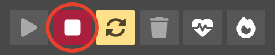
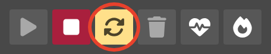

Experiments¶
For experiments spanning multiple minimega hosts, see GRE Mesh
to trunk experiment networks between hosts with --use-gre-mesh, including
the physical network MTU requirements.
Listing Experiments¶
Web UI¶
Click on the Experiments tab. This will display all available experiments that
the user has access to view or edit.

Click a topology or scenario name to open it on the
Configs page. Besides start, stop, restart
and delete, the Actions column has shortcuts to the experiment's
State of Health and SCORCH runs.
Command Line¶
This will display a list of all available experiments:
Add -o json or -o yaml for JSON or YAML output.
Starting / Stopping Experiments¶
Web UI¶
Click the stopped button (or the play button in the Actions column) to
start the experiment, and the started button (or the stop button) to stop
it. While the experiment starts or stops, a progress bar shows what step it's
on, such as Launching VMs 12/40.
| To | Click the status button | Or the button in the Actions column |
|---|---|---|
| Start a stopped experiment | ||
| Stop a running experiment |  |
|
| Restart a running experiment |  |


The start dialog has the same options as phenix exp start: a dry run that
does everything except call minimega, treating minimega errors as warnings,
and a VLAN range for this start only. Run the apps' running stage on its
schedule (on by default) runs the running stage of each app that has
runPeriodically in the scenario, as a background job that ends
when the experiment stops.

The stop dialog has the same options as phenix exp stop. Keep the
injection snapshots keeps the VM disk snapshots that phēnix deletes after a
stop otherwise. Force the stop marks the experiment stopped even if minimega
cannot kill its VMs. A notice then tells you to clear those VMs in minimega
yourself.

The restart button stops the experiment and starts it again, as
phenix exp restart does. Its dialog has the stop options and the start
options, without the dry run. Before the stop, phēnix
checks the disk images: a missing image refuses
the restart, and the experiment keeps running. If the start fails after the
stop, the experiment stays stopped. A restart needs the permissions to stop
and to start the experiment.

To start, stop, restart or delete several experiments at once, check them in
the table, then click Start, Stop, Restart or Delete above the table. phēnix
tells you which experiments it will skip, and offers to retry any that fail.

Command Line¶
Or ...
Or ...
Optionally, you can use the --dry-run flag to do everything except call out to
minimega. --vlan-min and --vlan-max set the VLAN range for just this
start.
While phenix exp start runs, the Experiments page of the web UI shows the
experiment as starting after a page refresh. phēnix refuses a second start of
the experiment until the first start ends.
The web UI also shows how far a start or a stop is: the phase, the step and the
percent that is done. While phenix exp stop runs, the page shows the
experiment as stopping after a page refresh.
After an experiment stops successfully, phēnix deletes the VM disk snapshots
created for file injection. To keep these snapshots for debugging, use
--keep-injection-snapshots or its -K shorthand:
phenix exp restart accepts this option too. In the Web-UI, the stop and
restart dialogs have it as Keep the injection snapshots.
If minimega can't kill the experiment's VMs (because it isn't answering, for
example), the stop fails and the experiment stays running. Try again once
minimega answers, or mark the experiment stopped anyway with --force (-f),
or Force the stop in the Web-UI, and clean up its leftover VMs in minimega
yourself:
See the phenix experiment CLI reference for every
subcommand and flag.
Note
For a list of global flags supported across all phenix subcommands, see Global Flags.
Disk Check Before a Start¶
Before minimega launches any VMs, phēnix checks their disk images, on every
kind of start (Web-UI, command line, API, phenix workflow apply, and the
bulk Start and Restart of VMs). It follows each qcow2 image's backing
chain down to its base, and skips external VMs and VMs with
do_not_boot: true. A CD-ROM image (advanced.cdrom) or a drive image with
the .iso extension only needs to exist.
If a file is missing, a backing chain is broken, or qemu can't open an image (an encrypted image, for example), the start is refused and the experiment stays stopped. See Broken Backing Chains and Image Format Versions. The error names the VM, disk and file:
Error: unable to start the foo experiment: qemu cannot open 2 disks on 1 VM: 2 errors occurred:
* VM host-01: disk kali.qc2: backing file /phenix/images/ro_kali.qc2 is missing
The Web-UI shows the same thing in an error message:

An old or unusual image format, or a file phēnix can't read, only causes a warning (in the server log for a start from the Web-UI or the API).
The setting experiment.disk-check sets how
strict the check is: error (the default) refuses the start, warn starts
the experiment and turns each problem into a warning, and off skips the
check. phenix exp start --dry-run and --treat-mm-errors-as-warnings also
turn every problem into a warning.
phēnix only checks the files on the head node, so an image that only a compute
node has will usually refuse the start. Copy it to the head node, or set
experiment.disk-check to warn.
A restart runs the check before it stops the experiment, and refuses the
restart if the start would be refused. With a user app in the scenario, this
early check only warns, and the check at the start can still refuse it. The
bulk Start and Restart of VMs check only the selected VMs that minimega
launches again: a VM with a broken image fails, and the other VMs start.
VLAN In Use at a Start¶
A start fails when minimega has given one of the experiment's pinned VLAN IDs
to another alias. In the Web-UI, the error has a Show the conflict link that
opens the VLANs page with the details of that ID.
The Running Experiment Page¶
Click a running experiment's name to open its page, then click Details to
see a summary of the experiment and the Apps box, which shows the status of
each app and lets you trigger app stages.
The stop and restart buttons next to the search box open the same dialogs as
the Experiments table.

Create a New Experiment¶
Web UI¶

Click the + button to the right of the filter field.

Enter Experiment Name and Experiment Topology, the remaining selection are
optional. In this example, bennu is an example topology and is not included
by default. You will need to create your own topology(ies),
or draw and publish one, with its experiment, in the
Builder.
Click Create Experiment, or Create and Start to start it right away.
Advanced Options sets the Deployment Mode (no-headnode, only-headnode
or all cluster hosts), the VLAN Range, a
workflow branch, and
annotations. Default Bridge Name only shows when the
bridge mode isn't auto.

Purely via the Web-UI (Uploading Topo/Scenario Files)¶
You can create an experiment entirely through the Web-UI using custom topology and scenario files without needing to use the CLI:
-
Upload Configurations on the Configs Page:
- Navigate to the Configs page in the Resources menu.
- Click the Upload button to upload your topology file (
.yaml). - (Optional) Click Upload again to upload your scenario file (
.yaml). - Verify that your uploaded configurations appear in the table (e.g.,
topology/my-topologyandscenario/my-scenario).
-
Create Experiment in Experiments Tab:
- Navigate to the Experiments tab.
- Click the
+button to open the creation dialog. - Enter an Experiment Name.
- Select your uploaded topology from the Experiment Topology dropdown.
- (Optional) Select your uploaded scenario from the Experiment Scenario dropdown.
- Click Create Experiment to create the experiment.
Command Line¶
You can create an experiment using either saved configuration names from the phēnix store or direct file paths to topology and scenario configuration files (.yaml).
# Using stored configuration names
phenix experiment create <experiment-name> -t <topology-name>
phenix experiment create <experiment-name> -t <topology-name> -s <scenario-name>
# Using direct file paths for topology and scenario
phenix experiment create <experiment-name> -t /path/to/topology.yaml
phenix experiment create <experiment-name> -t /path/to/topology.yaml -s /path/to/scenario.yaml
# Specifying a base directory and disabled apps
phenix experiment create <experiment-name> -t /path/to/topology.yaml -s /path/to/scenario.yaml -d </path/to/dir/> --disabled-apps "app1,app2"
An experiment can't be named all, minimega or __phenix__ (in any letter
case), or . or ... From the Web-UI and the API, the base directory
(spec.baseDir) must be a folder in <base-dir.phenix>/experiments. The
command line has no such limit.
See phenix experiment create in the CLI
reference for every flag.
Adding Annotations¶
You can add annotations to an experiment when you create it, without editing its topology or scenario:
| Annotations | Web-UI (Advanced Options) |
Command line (repeatable) | API (POST /experiments) |
|---|---|---|---|
| On every VM | Annotations for Every VM |
--node-annotation key=value |
node_annotations |
| On the experiment | Experiment Annotations |
--annotation key=value |
annotations |
Annotations for every VM are node annotations that apps read, such as
phenix/default-apps and
phenix/startup-via-cc. They go into
the experiment's own copy of the topology, not the topology config. A VM that
already has the annotation keeps its own value, and
external nodes are skipped.
Experiment annotations go into the experiment's metadata for apps to read,
such as the phenix.workflow/tags pairs that SCORCH records with each run.
You can't set topology or scenario.
# For every VM, deliver startup scripts over C2 and create a port forward from 8080 to its port 80
phenix experiment create my-experiment -t my-topology \
--node-annotation phenix/startup-via-cc=true \
--node-annotation 'phenix/startup-autotunnel=["8080:80"]' \
--annotation phenix.workflow/tags=team=red
In the Web-UI, Add annotation offers the annotations that phēnix's own apps
read, or a Custom annotation with any key and value.

In VM annotations, true, false and JSON lists or objects keep their type,
and phēnix rejects a value of the wrong type for an annotation its apps read.
To change one VM's annotations after the experiment is created, use the
Annotations section of its details card.
Deleting Experiments¶
Web UI¶
The experiment must be stopped before it can be deleted; its trash can icon is disabled while it runs. Click the trash can icon next to the experiment to delete it.

Command Line¶
An experiment must be stopped before it can be deleted:
Alternatively, the -f/--force flag can be used to automatically stop a
running experiment before deleting it, similar to docker rm -f, even when
minimega cannot kill its VMs, which are then left for you to clear by hand:
Using all instead of a specific experiment name will delete all stopped
experiments (or, when combined with --force, all experiments regardless of
whether they are running).
A delete from the Web-UI or the API doesn't remove a base directory outside
<base-dir.phenix>/experiments. phēnix logs a warning instead.
See phenix experiment delete in the CLI
reference for every flag.
Scheduling an Experiment¶
Schedulers¶
A scheduler picks the cluster host for each VM of a stopped experiment and
writes its choices to the experiment's schedules section. At start,
minimega places any VM that has no host. Schedulers only run when you ask for one, or when a
user app does (exit code 101). You can also set a single VM's host on the
Stopped Experiment page.
| Scheduler | What it does |
|---|---|
isolate-experiment |
Puts all VMs on one empty host (the first VM's host if it's empty, else the empty host with the most free memory). Replaces the hosts you set. |
round-robin |
Spreads the VMs that have no host evenly over the hosts. |
subnet-compute |
Keeps VMs whose first interface is on the same VLAN on the same host while it has free memory, and starts each new VLAN on the host with the least committed memory. |
round-robin and subnet-compute keep the hosts you set. To add your own
scheduler, put a program named phenix-scheduler-<name> on phēnix's PATH,
and phēnix runs it as the scheduler <name>.
Web UI¶
The experiment must be stopped; click on the experiment name to enter the
Stopped Experiment component. Click the Schedule button to the right of the
start button. The menu tells how many VMs have a host, and lists the
schedulers of the server. Click a scheduler, then confirm. See
Schedulers for what each one does.

Command Line¶
The list of available schedules can be found by running the following command.
Then apply the desired schedule with the following command.
A user scheduler (phenix-scheduler-<name>) gets a JSON object on STDIN: the
experiment spec (spec) and the schedulable cluster hosts with their disk
usage (hosts). To see
this JSON, run the following command. The command stores nothing.
The REST API gives the same JSON at
GET /api/v1/experiments/<experiment-name>/schedule/input.
Scheduling Limits¶
- A built-in scheduler must finish in 45 seconds. A user scheduler
(
phenix-scheduler-<name>) must finish in 2 minutes. If a scheduler does not finish in time, phēnix stops it and stores no schedule. The web UI and the REST API then show error 504. - If the experiment changes or starts while phēnix schedules it, phēnix keeps that change and stores no schedule. The web UI and the REST API then show error 409. Schedule the experiment again.
- The web UI and the REST API lock the experiment while they schedule it. You cannot start or change the experiment until the schedule is complete.
- If the cluster has mesh peers and no peer answers, phēnix stores no schedule. The web UI and the REST API then show error 503. Make sure that minimega runs on the compute nodes, then schedule the experiment again.
- A schedule can have warnings. phēnix stores the schedule and shows each
warning. The web UI shows them in a notice,
phenix experiment schedulelogs them, and the REST API puts them inwarnings. A built-in scheduler gives a warning in these conditions:- A VM is set to a host that is not a schedulable cluster host.
round-robinandsubnet-computekeep that host.isolate-experimentputs the VM on a different host. - The VMs on a host need more memory or more CPUs than the host has. The warning gives the committed value and the available value.
- A VM is set to a host that is not a schedulable cluster host.
- The capacity checks include the VMs that have
do_not_bootset, because you can boot these VMs later. subnet-computeputs a VM that has no interfaces on the host that has the most VMs of the experiment. If that host does not have sufficient memory, it uses the next host.
Triggering App Lifecycle Stages¶
You can manually trigger an app lifecycle stage for an experiment without stopping and restarting it.
Command Line¶
The phenix exp trigger command runs one app lifecycle stage on demand:
Where <lifecycle> is one of the following stages, or its shorthand:
configure(orconfig)pre-start(orpre)post-start(orpost)running(orrun)cleanup(orclean)
Providing no app names triggers the stage for every app in the experiment. Use
all instead of an experiment name to trigger the stage in every experiment.
The running stage is skipped for experiments that are not running.
The stage runs in the command's own process, so press Ctrl+C to stop it.
Examples:
Trigger the running stage for all apps in an experiment:
Trigger the running stage for a specific app:
Trigger the configure stage for all experiments:
To stop triggers that phenix ui is running (from the Web-UI or the REST
API), use --cancel, with app names to stop only those. With no app names, it
also stops the scheduled runs of the running stage from a
start.
API¶
POST /api/v1/experiments/<experiment-name>/trigger?apps=<app,...>&stage=<stage>
runs one stage for the apps that apps names. The stage value is one of the
stage names above, or its shorthand. Without stage, the
request runs the running stage. The request returns before the apps run.
The /ws websocket reports the progress of each app. With all as the
experiment name, the stage runs in every experiment as a
background job. DELETE on the same path cancels the triggers of
the apps in apps, or of all apps.
Web UI¶
On a running experiment's page, click Trigger or an app tile in the Apps box
to open the phēnix Apps dialog. The page header is collapsed by default. To
see the Apps box, click Details. The browser keeps this choice. Select a stage in the Stage list. The default stage is
running. Select the apps, then click Trigger Apps. The running stage does
not offer the apps that phēnix runs itself, such as ntp. The dialog shows a
warning for each other stage, because the stage can change the running
experiment. The configure stage rewrites the experiment spec.

trigger configure vs. reconfigure¶
phenix exp trigger configure and phenix experiment reconfigure both re-run
the configure lifecycle stage, but they serve different purposes and are not
interchangeable:
phenix exp trigger <experiment-name> configure |
phenix experiment reconfigure |
|
|---|---|---|
| Use case | Manually re-run a specific app's (or apps') configure hook on demand, e.g. for debugging | Re-apply configuration after editing an experiment's stored topology, scenario, or deployment settings |
| Targets specific apps | Yes, via [<app-name> ...] |
No, always applies to every app |
| Validates the experiment config | No | Yes |
| Runs registered config hooks | No | Yes |
| Guards against running experiments | No | Yes (refuses to run if the experiment is running) |
Use phenix experiment reconfigure after changing an experiment's stored
settings. Use phenix exp trigger <experiment-name> configure for targeted, on-demand
re-invocation of one or more apps' configure hooks, such as when debugging an
app.
Deprecated Command¶
The phenix exp trigger-running command, and its trig alias, are deprecated
and will be removed in a future release. Use phenix exp trigger instead.
The deprecated command:
Is equivalent to:
The old argument order, phenix exp trigger <lifecycle> <experiment-name>, is
also deprecated (see Deprecations).
VLAN Aliases¶
Topologies refer to VLANs by alias, such as MGMT or EXP-1,
which is mapped by phēnix to a numerical VLAN ID.
Web UI¶
On a stopped experiment, click the VLAN IDs button. The menu lists each
alias with its VLAN ID. Enter an ID from 1 to 4094, or 0 to let minimega
pick an ID when the experiment starts. Then click Save VLAN IDs.
Before saving, phēnix checks the IDs against the rest of the cluster and lists any conflict, such as an ID that another experiment has pinned (see Conflict Check Before a Save).
Command Line¶
The phenix vlan alias command can list and change VLAN aliases.
# List VLAN aliases of every experiment
phenix vlan alias
# List VLAN aliases of a single experiment
phenix vlan alias <experiment-name>
# Print the VLAN ID of a specific alias for an experiment
phenix vlan alias <experiment-name> <alias-name>
# Pin the alias to a VLAN ID
phenix vlan alias <experiment-name> <alias-name> <vlan-id>
# Clear the pin, so minimega gives the alias an ID at the start
phenix vlan alias <experiment-name> <alias-name> --unpin
To pin or unpin an alias, the experiment must be stopped. phēnix refuses a pin
when another experiment or a minimega namespace already uses the ID, or when
minimega blacklists it. Add --force to pin it anyway. See VLANs
for the other phenix vlan commands.
For example, if the MYVLAN alias of my-experiment maps to VLAN 105:
A running experiment reports the VLAN IDs minimega assigned when it started. A stopped experiment has no ID for an alias unless one was set explicitly, so most alias lookups will fail until the experiment starts.
Experiment Files¶
The Files tab of an experiment (running or stopped) lists the files that
phēnix, its apps and SCORCH wrote for it, wherever on the cluster they were
written. They live in the experiment's files folder in the minimega files
directory, which the Disks page leaves out, so this is where you
manage the experiment's VM disk snapshots.

Finding a File¶
Use the All Categories dropdown to show one category, such as
Packet Capture, Scorch Artifact or VM Disk Snapshot, or the
Find a File box to search the names and categories of all the experiment's
files.
Opening a File¶
Click a text file's name (.json, .jsonl, .log, .txt, .yaml or
.yml) to read it in the browser, up to 10 MiB. Click a capture file's name
(.pcap, .pcapng or .cap, optionally gzipped) to open it in
WebShark, if WebShark is installed. Download
anything else. An interrupted download resumes.
You can't view, download or delete a .pcap file that a running capture is
still writing. Stop the capture first, or watch it live in
WebShark.
Acting on Several Files¶
Check some files (or the heading checkbox, for every file the table shows) to get a toolbar above the table:
Download (N)zips the checked files into<experiment-name>-files.zipas a background job, then downloads it. If you leave the page, you can still download the archive from the jobs menu within the hour.Delete (N)deletes the checked files.
Warning
Deleting a file removes it from every cluster node, and it can't be undone.


One zip download holds at most 500 files and 2 GiB in total. A file the
server can't fetch is left out of the archive, and a file that grows while the
archive is built is cut at the size it had. The archive is then named
<experiment-name>-files-incomplete.zip, its MISSING.txt lists those
files, and it only downloads after you click Download incomplete archive.
Adding Files¶
To add your own files, such as an installer or a config file, upload them
through the phēnix file server (see
Uploading Experiment Files from the phēnix Server,
which also covers copying them into a VM). They show up in the Files tab
like any other.
Command Line¶
The phenix exp files commands do the same things as the Files tab (see
phenix experiment files). A file
is named by its path relative to the experiment's files folder, as
phenix exp files list shows it.
# List the packet captures larger than 1 MB
phenix exp files list my-exp --filter "packet and size > 1mb"
# Copy a file to the current folder
phenix exp files get my-exp captures/web_eth0.pcap -O web_eth0.pcap
# Print the SHA-256 checksum of a file
phenix exp files checksum my-exp captures/web_eth0.pcap
# Write several files to a local zip archive
phenix exp files archive my-exp web_eth0.pcap db_eth0.pcap -O captures.zip
# Delete files from every node (add --dry-run to see what it would delete)
phenix exp files delete my-exp web_eth0.pcap
--filter takes the same search syntax as the Files tab (see
phenix experiment files list).
archive has the same limits as the Files tab, and if it has to leave a
file out, it still writes the archive (with MISSING.txt) and then fails.
Common Workflows¶
1. Basic Experiment Lifecycle¶
# 1. Create experiment from topology/scenario files
phenix exp create my-experiment -t /path/to/topology.yaml -s /path/to/scenario.yaml
# 2. Start the experiment
phenix exp start my-experiment
# 3. View status and inspect VMs
phenix exp list
phenix vm info my-experiment
# 4. Stop the experiment when testing finishes
phenix exp stop my-experiment
# 5. Delete the experiment
phenix exp delete my-experiment
2. Updating and Reconfiguring an Experiment¶
# Reconfigure a stopped experiment after modifying underlying configuration files
phenix exp reconfigure my-experiment
3. Dry-Run Deployment Testing¶
# Test experiment startup logic without deploying minimega VMs
phenix exp start my-experiment --dry-run
See Also¶
- phenix experiment: every experiment command and flag.
- phenix experiment files: every files command and flag.
- Experiment: the Experiment config.
- VMs: work with the VMs of a running experiment.
- Troubleshooting: what to do when a start fails.
- Packet Captures: where the capture files come from.
- Netflow: the recorded netflow captures.